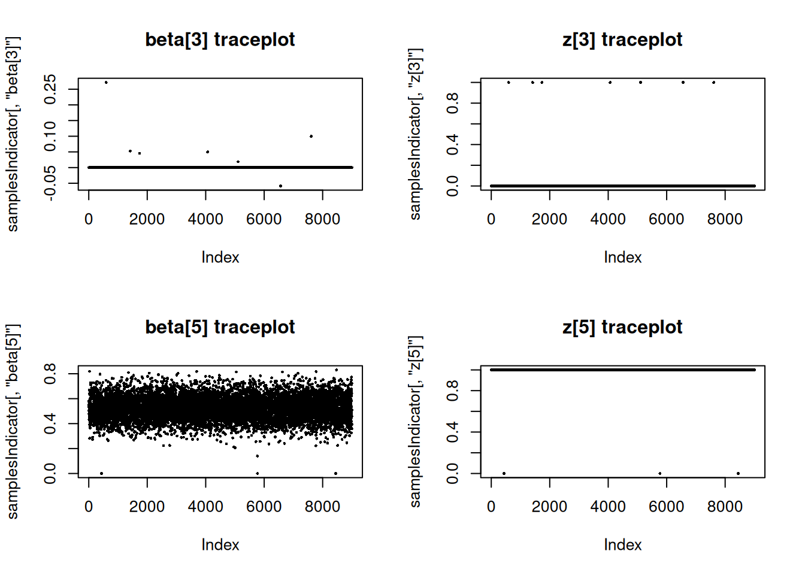
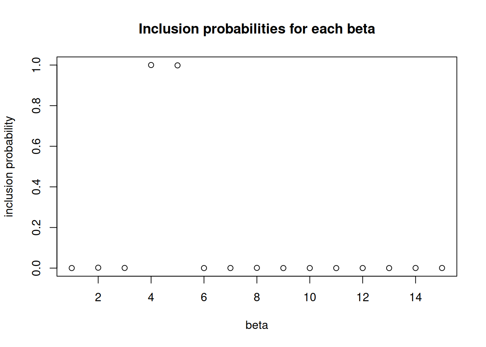

Variable selection in NIMBLE using reversible jump MCMC
announcement
Author
Sally Paganin
Published
January 2, 2020
Reversible Jump MCMC Overview
Reversible Jump MCMC (RJMCMC) is a general framework for MCMC simulation in which the dimension of the parameter space (i.e., the number of parameters) can vary between iterations of the Markov chain. It can be viewed as an extension of the Metropolis-Hastings algorithm onto more general state spaces. A common use case for RJMCMC is for variable selection in regression-style problems, where the dimension of the parameter space varies as variables are included or excluded from the regression specification.
Recently we added an RJMCMC sampler for variable selection to NIMBLE, using a univariate normal distribution as proposal distribution. There are two ways to use RJMCMC variable selection in your model. If you know the prior probability for inclusion of a variable in the model, you can use that directly in the RJMCMC without modifying your model. If you need the prior probability for inclusion in the model to be a model node itself, such as if it will have a prior and be estimated, you will need to write the model with indicator variables. In this post we will illustrate the basic usage of NIMBLE RJMCMC in both situations.
More information can be found in the NIMBLE User Manual and via help(configureRJ).
Linear regression example
In the following we consider a linear regression example in which we have 15 explanatory variables, and five of those are real effects while the others have no effect. First we simulate some data.
Next we set up the model. In this case we explicitly include indicator variables that include or exclude the corresponding predictor variable. For this example we assume the indicator variables are exchangeable and we include the inclusion probability in the inference.
library(nimble)
lmIndicatorCode <-nimbleCode({ sigma ~dunif(0, 20) ## uniform prior per Gelman (2006) psi ~dunif(0,1) ## prior on inclusion probabilityfor(i in1:numVars) { z[i] ~dbern(psi) ## indicator variable for each coefficient beta[i] ~dnorm(0, sd =100) zbeta[i] <- z[i] * beta[i] ## indicator * beta }for(i in1:N) { pred.y[i] <-inprod(X[i, 1:numVars], zbeta[1:numVars]) y[i] ~dnorm(pred.y[i], sd = sigma) }})## Set up the model.lmIndicatorConstants <-list(N =100, numVars =15)lmIndicatorInits <-list(sigma =1, psi =0.5,beta =rnorm(lmIndicatorConstants$numVars),z =sample(0:1, lmIndicatorConstants$numVars, 0.5))lmIndicatorData <-list(y = y, X = X)lmIndicatorModel <-nimbleModel(code = lmIndicatorCode, constants = lmIndicatorConstants,inits = lmIndicatorInits, data = lmIndicatorData)
Defining model
Building model
Setting data and initial values
Running calculate on model
[Note] Any error reports that follow may simply reflect missing values in model variables.
Checking model sizes and dimensions
The above model code can potentially be used to set up variable selection in NIMBLE without using RJMCMC, since the indicator variables can turn the regression parameters off and on. However, in that case the MCMC sampling can be inefficient because a given regression parameter can wander widely in the parameter space when the corresponding variable is not in the model. This can make it difficult for the variable to be put back into the model, unless the prior for that variable is (perhaps artificially) made somewhat informative. Configuring RJMCMC sampling via our NIMBLE function configureRJ results in the MCMC not sampling the regression coefficients for variables for iterations where the variables are not in the model.
Configuring RJMCMC
The RJMCMC sampler can be added to the MCMC configuration by calling the function configureRJ(). In the example considered we introduced z as indicator variables associated with the regression coefficients beta. We can pass these, respectively, to configureRJ using the arguments indicatorNodes and targetNodes. The control arguments allow one to specify the mean and the scale of the normal proposal distribution used when proposing to put a coefficient back into the model.
Checking the assigned samplers we see that the indicator variables are each assigned an RJ_indicator sampler whose targetNode is the corresponding coefficient, while the beta parameters have a RJ_toggled sampler. The latter sampler is a modified version of the original sampler to the targetNode that is invoked only when the variable is currently in the model.
## Check the assigned samplerslmIndicatorConf$printSamplers(c("z[1]", "beta[1]"))
We can look at the sampled values of the indicator and corresponding coefficient for some of the variables.
par(mfrow =c(2, 2))plot(samplesIndicator[,'beta[3]'], pch =16, cex =0.4, main ="beta[3] traceplot")plot(samplesIndicator[,'z[3]'], pch =16, cex =0.4, main ="z[3] traceplot")plot(samplesIndicator[,'beta[5]'], pch =16, cex =0.4, main ="beta[5] traceplot")plot(samplesIndicator[,'z[5]'], pch =16, cex =0.4, main ="z[5] traceplot")

Individual inclusion probabilities
Now let’s look at the inference on the variable selection problem. We see that the fourth and fifth predictors are almost always included (these are the ones with the largest true coefficient values), while the others, including some variables that are truly associated with the outcome but have smaller true coefficient values, are almost never included.
par(mfrow =c(1, 1))zCols <-grep("z\\[", colnames(samplesIndicator))posterior_inclusion_prob <-colMeans(samplesIndicator[, zCols])plot(1:length(true_betas), posterior_inclusion_prob,xlab ="beta", ylab ="inclusion probability",main ="Inclusion probabilities for each beta")

Reversible jump without indicator variables
If we assume that the inclusion probabilities for the coefficients are known, we can use the RJMCMC with model code written without indicator variables.
Running calculate on model
[Note] Any error reports that follow may simply reflect missing values in model variables.
Checking model sizes and dimensions
Configuring RJMCMC with no indicator variables
Again, the RJMCMC sampler can be added to the MCMC configuration by calling the function configureRJ() for nodes specified in targetNodes, but since there are no indicator variables we need to provide the prior inclusion probabilities. We use the priorProb argument, and we can provide either a vector of values or a common value.
Since there are no indicator variables in this case, a RJ_fixed_prior sampler is assigned directly to each of coefficents along with the RJ_toggled sampler, which still uses the default sampler for the node, but only if the corresponding variable is in the model at a given iteration. In addition in this case one can set the coefficient to a value different from zero via the fixedValue argument in the control list.
## Check the assigned samplerslmNoIndicatorConf$printSamplers(c("beta[1]"))